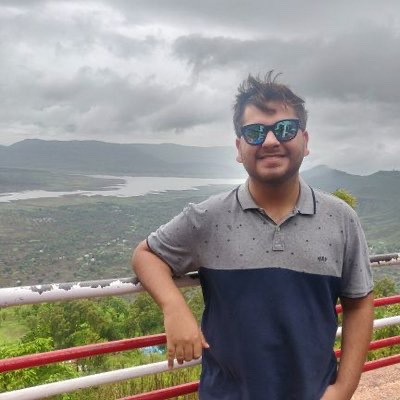
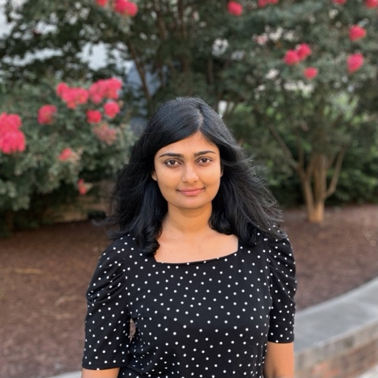
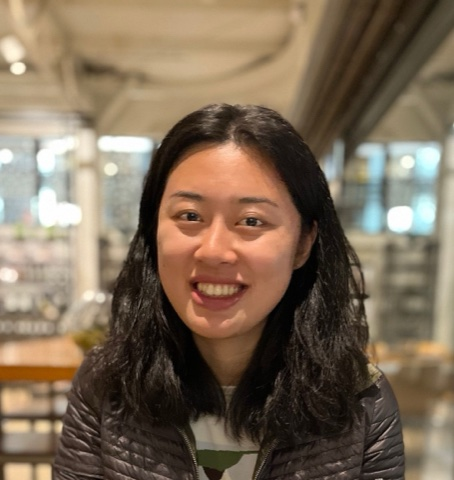

ECCV 2026 Tutorial
Evaluating Visual Foundation Models
About
The rapid advance of visual AI has produced a converging family of visual foundation models (VFMs): large-scale pretrained systems that consume or generate visual signals, and often interface with text and actions. This umbrella spans visual understanding models such as multimodal LLMs, visual generative models built on diffusion, flow-matching, or autoregressive approaches, and world models that learn predictive representations of environments to support planning and interaction. As these models move from research prototypes to deployed systems, rigorous evaluation is no longer a secondary concern; it is the primary bottleneck gating further progress.
Evaluation now shapes the entire development cycle. Leaderboards ground comparisons in human preference, but a single scalar reveals little about negation, compositionality, or physical plausibility, and in the era of RLHF every weakness in a reward model becomes a target for reward hacking. This half-day tutorial provides a unified treatment of evaluation across VFMs, from visual understanding to generation and world models for embodied intelligence.
Topics
- Evaluating visual understanding: capability benchmarks for perception and reasoning, plus reliability concerns like hallucination, robustness, and contamination
- Evaluating image and video generation: compositional benchmarks, physical plausibility, and learned reward models
- Evaluating world models: 3D consistency and whether learned models actually support downstream control
- Embodied evaluation: vision-language-action systems and long-horizon tasks
- Cross-cutting failure modes: judge-model circularity, reward hacking, and benchmark saturation and drift
Schedule
-
1:00 – 2:00 PM
Evaluating Visual Understanding: From VQA to Multimodal Reasoning
-
2:00 – 3:00 PM
Evaluating Image and Video Generation Models
-
3:00 – 4:00 PM
Evaluation for World Models and 3D Consistency
-
4:00 – 5:00 PM
Evaluating World Models for Embodied Intelligence
Speakers

Ruchit RawalUniversity of Maryland
Ruchit Rawal is a PhD student in computer science at the University of Maryland, advised by Tom Goldstein. His research focuses on the evaluation and reliability of multimodal LLMs, including CinePile, a benchmark for long-video question answering, and ARGUS, a framework for measuring hallucinations and omissions in video captioning.

Gowthami SomepalliWorld Labs
Gowthami Somepalli is a member of technical staff at World Labs, working on post-training of generative world models. She received her PhD from the University of Maryland, where she studied memorization and data replication in diffusion models, style similarity, and video understanding benchmarks.

Ziqi MaCaltech
Ziqi Ma is a PhD student in computing and mathematical sciences at Caltech, advised by Georgia Gkioxari and Yisong Yue, and a Kortschak Scholar, working on 3D computer vision to enable AI in the physical world. Recent work includes SAM 3D for image-to-3D reconstruction, Find Any Part in 3D (an ICCV 2025 highlight) for open-world 3D part localization, and Steer3D for language-steerable editing of generative 3D models, alongside research experience at Meta Superintelligence Labs and Microsoft.
Furong HuangUniversity of Maryland
Furong Huang is an Associate Professor of Computer Science at the University of Maryland. Her research spans trustworthy AI, reinforcement learning, and embodied intelligence, with recent work on visual representation learning for robotic control (TACO, Premier-TACO), vision-language-action models (TraceVLA), and model-based RL under world-model uncertainty (COPlanner). She is a recipient of an NSF CAREER Award, a DARPA Young Faculty Award, an ONR Young Investigator Award, and multiple Amazon and JP Morgan faculty research awards.
Materials
Slides and recordings will be posted after the tutorial.